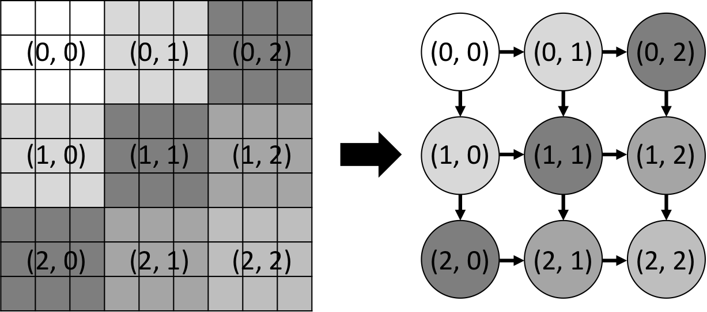

Wavefront Parallelism
We study the wavefront parallelism, which is a common pattern in dynamic programming to sweep elements in a diagonal direction.
Problem Formulation
The computation starts at a singular point at a corner of a data plan (e.g., grid) and propagates its effect diagonally to other elements. This sweep of computation is known as wavefront. Each point in the wavefront can be computed in parallel. The following example shows a wavefront parallelism in a 2D matrix.
We partition the 9x9 grid into a 3x3 block and assign a task to one block. The wavefront propagates task dependencies from the top-left block all the way to the bottom-right block. Each task precedes two tasks, one to the right and another below.
Wavefront Task Graph
We can describe the wavefront parallelism in a simple two-level loop. Since we need to address the two tasks upper and left to a task when creating its dependencies, we use a 2D vector to pre-allocate all tasks via tf::
#include <taskflow/taskflow.hpp> int main() { tf::Executor executor; tf::Taskflow taskflow; int num_blocks = 3; std::vector<std::vector<tf::Task>> node(num_blocks); // create num_blocks*num_blocks placeholder tasks for(auto &n : node){ for(int i=0; i<num_blocks; i++){ n.emplace_back(taskflow.placeholder()); } } // scan each block and create dependencies for( int i=num_blocks; --i>=0; ) { for( int j=num_blocks; --j>=0; ) { // deferred task assignment node[i][j].work([=]() { printf("compute block (%d, %d)", i, j); }); // wavefront dependency if(j+1 < num_blocks) node[i][j].precede(node[i][j+1]); if(i+1 < num_blocks) node[i][j].precede(node[i+1][j]); } } executor.run(taskflow).wait(); // dump the taskflow taskflow.dump(std::cout); }
The figure below shows the wavefront parallelism in a 3x3 grid:
Wavefront parallelism has many variations in different applications, for instance, Smith-Waterman sequencing, video encoding algorithms, image analysis, and pipeline parallelism. The parallel pattern exhibits in a diagonal direction.